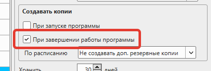

Резервное копирование (создание бэкапов) – важный процесс для обеспечения сохранности информации. В процессе резервного копирования создается копия данных, из которой информация может быть восстановлена в случае выхода из строя основного используемого устройства.
GBS.Market – это "настольная" кассовая программа, которая хранит данные непосредственно на компьютере пользователя. В случае, если компьютер с программой выйдет из строя можно потерять всю информацию, которая была в программе. Чтобы избежать утраты данных, необходимо своевременно создавать резервные копии. Резервные копии могут быть созданы как вручную, так и автоматически.
Резервное копирование - это важно!
Мы настоятельно рекомендуем настроить резервное копирование. В случае, если ваше устройство выйдет из строя, а резервных копий не будет - МЫ НЕ СМОЖЕМ ПОМОЧЬ с восстановлением информации, т.к. НЕ ХРАНИМ у себя никакие пользовательские данные.
Полезные материалы
Даже если вы настроили автоматическое создание резервных копий, но они сохраняются на том же устройстве, где установлена программа, то шансов восстановить данные в случае выхода из строя компьютера немного. В этом случае имеет смысл настройки копирования резервных копий в "облако".
Установка "облака"
Для того чтобы настроить резервное копирование в облачное хранилище, его необходимо установить. В качестве "облака" можно использовать такие сервисы, как:
Рекомендуемые облачные сервисы
- Яндекс.Диск – рекомендуем!
- Mail.ru облако
- Google.Drive
- One.Drive
- Dropbox
- и т.п.
В выбранном сервисе необходимо пройти регистрацию, а затем установить программу для синхронизации.
Процесс установки Яндекс.Диска
Полезные материалы
Создание папки для резервных копий
После того как программа "облако" установлена на ваш компьютер, необходимо в "облаке" создать папку, в которую будут выгружаться резервные копии.
Важно
Обратите внимание, что в некоторых случаях папка может быть создана с опцией "хранить только в облаке" – тогда она не будет отображаться на компьютере и в нее не получится сохранить резервные копии. В этом случае выберите созданную папку, нажмите правую кнопку мыши и нажмите "Сохранить на компьютере"
Настройка резервного копирования в GBS.Market
Когда папка для резервных копий будет создана, можно перейти к настройке кассовой программы GBS.Market. Подробный процесс настройки автоматического резервного копирования описан в статье. Отметим, что для сохранения резервных копий в "облако", необходимо указать ранее созданную папку.
Оставьте включенным создание резервных копий хотя бы при закрытии программы.
Если программа перезапускается очень редко – настройте резервное копирование по расписанию. Например, каждые 6 часов.
Проверка корректности создания резервных копий
После настройки необходимо убедиться, что резервные копии корректно создаются. Еще раз проверьте настройки резервного копирования и сохраните внесенные изменения. Перезапустите программу.
При закрытии, если включена соответствующая опция, программа создаст резервную копию. В "облачной" папке будет создана подпапка, имя которой соответствует GBS.ID компьютера, а в ней – архив с данными.
Структура папок
В облачной папке создается подпапка с именем GBS.ID компьютера, содержащая архив с данными программы.
Чтобы еще раз убедиться, что резервная копия выгружается в "облако", откройте в браузере личный кабинет облачного сервиса. Например, для Яндекс.Диска можно кликнуть правой кнопкой мыши на иконку в трее (рядом с часами) и нажать "Перейти на сайт".
На открывшейся странице вы увидите те файлы, которые есть в вашем "облаке". На скриншоте показана ранее созданная папка для резервных копий.
Важно
Обратите внимание, что в веб-версии "облака" файлы могут появиться с задержкой, т.к. для их выгрузки необходимо время. При медленном интернете и большом объеме резервных копий это может происходить долго.

Перейдите в папку, чтобы проверить наличие файла созданной резервной копии.
Восстановление данных из "облачной" резервной копии
В случае, если устройство, на котором использовалась кассовая программа GBS.Market вышло из строя – можно воспользоваться резервными копиями, которые сохранялись в "облако".
Установите программу на новое устройство, а затем воспользуйтесь инструкцией по восстановлению данных из бэкапа.
Полезные материалы
После восстановления перезапустите программу. Вы продолжите работу с теми данными, которые были актуальны на момент создания резервной копии.
Важно
Если вы сменили устройство - не забудьте настроить резервное копирование заново!
Краткая инструкция по настройке
- Выберите и зарегистрируйтесь в облачном сервисе
- Установите программу синхронизации облака
- Создайте папку для резервных копий в облаке
- Убедитесь, что папка сохраняется на компьютере
- Настройте резервное копирование в GBS.Market
- Укажите путь к облачной папке
- Настройте периодичность создания копий
- Проверьте корректность создания резервных копий
- Убедитесь в наличии файлов в веб-версии облака
Полезные советы
- Используйте Яндекс.Диск для лучшей совместимости
- Настройте резервное копирование при закрытии программы
- Дополнительно настройте копирование по расписанию
- Регулярно проверяйте наличие резервных копий в облаке
- При смене устройства настройте резервное копирование заново
- Имейте доступ к облачному аккаунту с любого устройства
- Проверяйте скорость интернета для загрузки больших файлов
Дополнительная информация
- Резервные копии создаются в формате ZIP-архива
- Размер архива зависит от объема данных в базе
- Загрузка в облако может занять время при медленном интернете
- Файлы в веб-версии облака могут появляться с задержкой
- Каждый компьютер имеет уникальный GBS.ID
- Резервные копии автоматически организуются по компьютерам
- Можно восстановить данные на любом новом устройстве